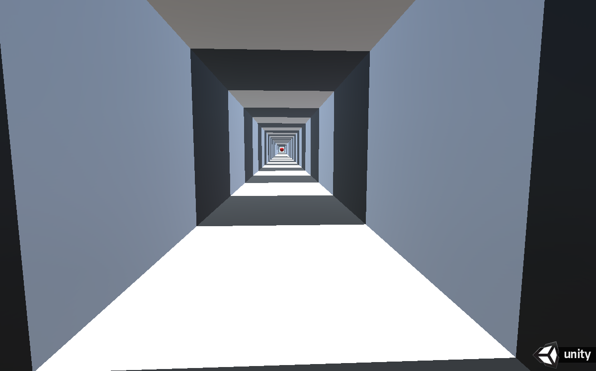

Sébastien Kerbrat
sbkerbrat@gmail.com
Personal projects on Unity
Subject 4087 (game)

Technologies : Unity with C#
This is a game I am currently working on with two friends, we are all contributing to the game design and the overall story. I'm responsible for the development and level-design.
We want to create a puzzle game that would uncover progressively a the story behind the character and the reason he is in this room.
So far I mostly practiced structuring my code so I can more easily add new mechanics, using events to notify the game model when animations are finished.
It is also my first real try at level design.
Orbit game (game) (src)

Technologies : Unity with C#
The idea behind this quick prototype was to make a game where you would throw planets around stars, trying to put them into stable orbit. It was one of my ideas when branstorming about Subject 4087 but we didn't pursue it.
HoverLike Game (game) (src)
This game is multiplayer so you can start it twice to get the client-side perspective

Technologies : Unity with C#
I really liked the mod Hover on Starcraft II and I tried to create a similar game.
I stopped working on it when I started Subject 4087 with my friend but it taught me a lot about networking issues. I especially had problems when trying to synchronize the ball position with extrapolation when it would bounce on the walls. I made a mix of rigidbody and position synchronisation which works better but that I should still improve if I continue working on this game.
Only-two-options (game) (src)
Technologies : Unity with C#
When I started creating this game, I wanted to create a "I can see the end but I don't seem to get closer" feeling. I also wanted to try to make something which would feel like a level from the game "Antichamber". I then found a way to end the game and a nice quote.
As it is, it is not really a game, maybe a bad puzzle. I have thought about creating obstacles like projectiles to dodge. The player would have to overcome while going towards the end of the tunnel.
As he would progress he would be able to read messages feeling like self doubt or people discouraging the player. "You're making no progress" or "How much time have you been running this way" "Why do you even try".
As he would progress further, the messages would be more obvious and guide him so he could finish the game. "Are there no other options?" "Is this the only way?".
Famine (game) (src)

This game is multiplayer so you will need to start it twice to play
Technologies : Unity with C#
I really enjoyed playing the game CivClicker and I tried to make a multiplayer version starting from scratch.
I eventually changed the ressource gathering mechanics because I didn't want the game to be about clinking as fast as possible, you can find the rules here
At this point, I feel the game isn’t really fun, as soon as one player starts winning I don’t see how the other could come back. I need to think about mechanics to add more depth.
Another problem is that you have to read the rules to understand how to play, I have to rethink the UI to fit more information without making it hard to read.